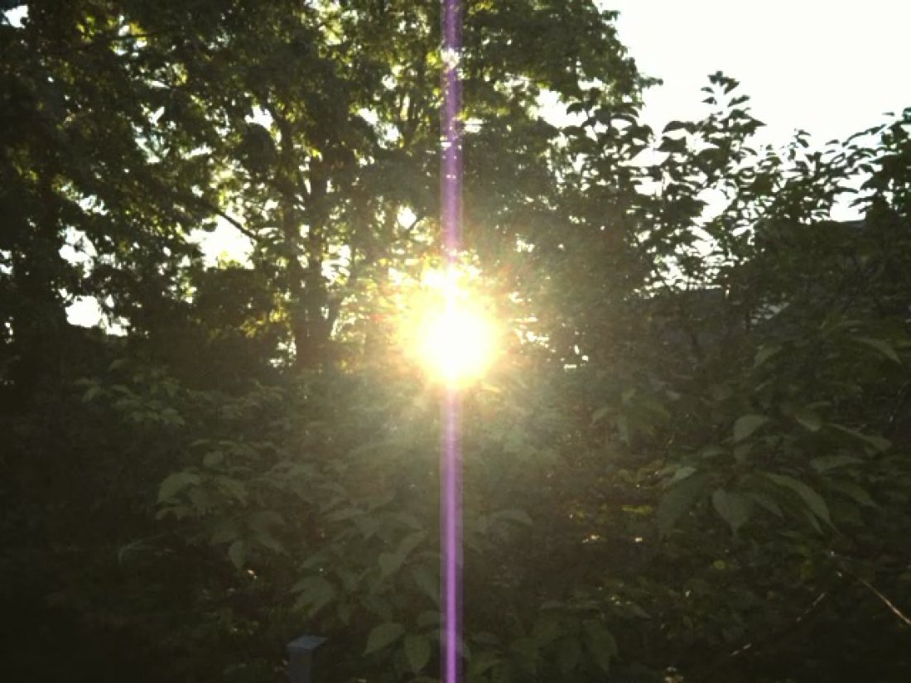
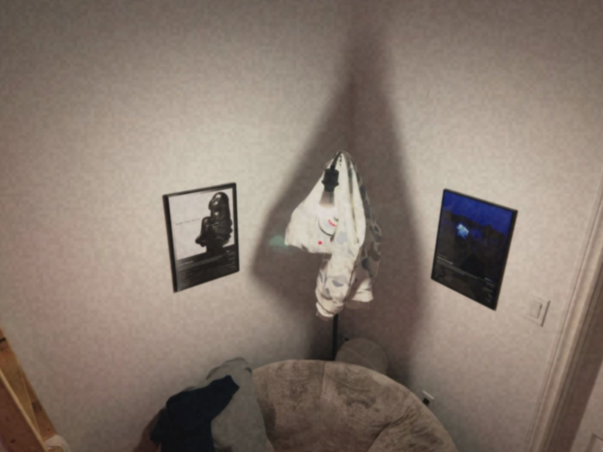
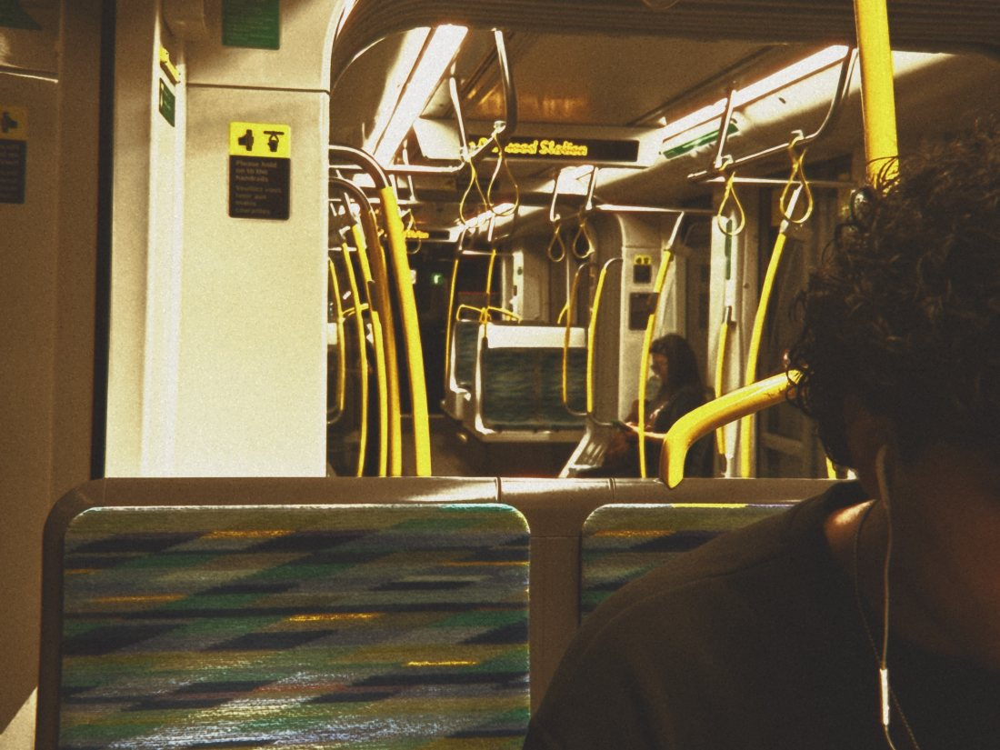

Stunn
iPhone & iPadNot a look laid over your photo afterwards. You pick a body, and the lens, the grain, the frame rate, the way it blows a highlight and the way it smears a light pointed straight at it all come with it. Photo and video.


